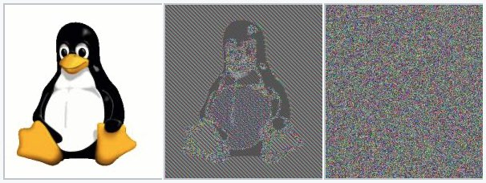
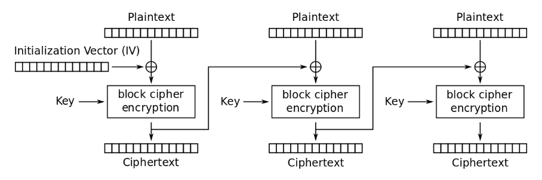
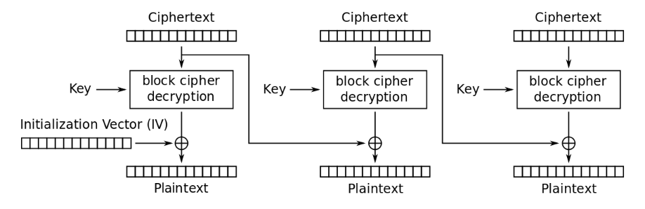
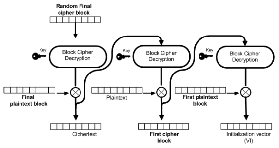

AES-CBC密文填充攻击—深入理解和编程实现
密文填充攻击 (Padding Oracle Attack) 可能是现代密码学史上的最有名也最成功的攻击方法。攻击者利用密文的填充验证反馈信息，实现密文破解。这里简单回顾密文填充攻击的发展历史，然后深入剖析AES-CBC工作模式下的攻击原理，最后给出了Python的编程实现示例。
密文填充攻击简史
早在1998年，在贝尔实验室工作的密码学家丹尼尔·布莱肯巴赫（Daniel Bleichenbacher）首次成功设计和实现了使用选择密文攻击破解基于RSA公钥加密标准PKCS #1 v1.5的密码1。这种攻击依赖于密文接受方反馈的填充格式正确与否信息，持续发送构造的密文以精准地定位明文。虽然当时并未见攻击所造成实质危害的报道，但是这种新颖的攻击手段引起了密码学家和保密通信协议研究者的广泛关注。
三年后，澳大利亚电讯研究实验室的詹姆斯·马格（James Manger）发现了应用类似技术攻击更新后的PKCS #1 v2.0加密标准的方法2。攻击的有效性取决于在解密和完整性检测过程之间所泄漏的信息，而该版本协议的设计使得实际实现中出现这种情况的可能性极高。这次攻击的目标仍旧是非对称的RSA公钥加密协议，然而已经有研究者着力于使用相似的攻击手段破解对称加密协议。
2002年，瑞士洛桑联邦理工学院的密码学家塞尔日·瓦德奈（Serge Vaudenay）在欧洲密码学年会（EUROCRYPT）上发表论文3，详述他发明的使用密文填充验证应答消息攻击CBC模式的对称分组加密密码。由于这种密文填充攻击的原理和实现都比较简单，同时CBC模式的分组密码应用非常普遍，瓦德奈的发明很快成为密码学家和信息安全专家的研究热点，也被许多黑客/极客投入实践中。在接下来的十多年里，源于这种攻击方法所发现的CBC模式相关的保密通信安全漏洞不断地涌现，如下所列：
- 2003年，结合时序攻击，破解IMAP电邮服务器与Outlook客户端之间的SSL/TLS加密信道，盗取用户密码。
- 2004年，证明攻击适用于ISO CBC模式加密和填充标准，可以有效地破译出明文。
- 2007年，攻击只加密不认证的IPsec网络配置，成功破解有效载荷（payload）明文。
- 2009年，利用消息认证码（MAC）执行时间的微小差别区分填充验证结果，攻破OpenSSL和GnuTLS的DTLS实现，恢复全部明文。
- 2010年，成功攻破验证码（CAPTCHA）系统，为后续拒绝服务攻击扫清道路；破译JavaServer Faces加密的访问状态；应用衍生的CBC-R加密算法，伪造可被服务器解密及填充验证无误的访问状态。
- 2011年，发现微软ASP.NET网页应用框架中的多个安全设计漏洞，可被攻击者利用破解未认证的加密小信息块（cookie）及伪造访问状态用以盗取服务器上限制访问目录中的文件。这给当时25%的互联网站点的安全性带来巨大冲击。
- 2012年，攻击硬件辅助RSA或CBC加密设备如USB安全令牌、智能卡和电子ID卡等，破解导入的密码。
- 2013年，全新变种“幸运十三攻击”出现，其针对TLS协议中的 HMAC-SHA1 MAC验证的软件实现进行侧信道时序攻击。开源TLS/DTLS软件库包OpenSSL、GnuTLS、PolarSSL、CyaSSL及亚马逊AWS所开发的s2n都需要打补丁修复相应的漏洞。
- 2014年，谷歌安全团队报告“贵宾犬漏洞”（POODLE）。攻击者可利用软件实现中为照顾不同版本互通性而牺牲安全性的机制， 采用中间人攻击方式将客户端连接降级到SSL 3.0，再进行密文填充攻击破解密文。几个月后，又出现了一个新变种，攻击TLS 1.0-1.2服务器协议实现中的一些漏洞。
- 2016年，Steam游戏平台被曝光其客户端连接存在严重安全漏洞，可让攻击者组合重放攻击与密文填充攻击破解用户密码和其它保密信息；同年，常见漏洞与披露报告CVE-2016-2107揭示了OpenSSL针对“幸运十三攻击”的补丁中引入了另一个CBC模式密文填充攻击漏洞。
从密文填充攻击的历史进程可以看出，虽然这种攻击方法始于非对称的加密协议，但是作用于分组加密CBC模式下，其攻击力和影响力都得到大幅提升。这并非是因为分组加密比RSA公钥加密弱，实际上AES-128自身的安全强度高于当前通用的2048比特模数RSA。真正的原因在于分组加密与CBC模式的既有广泛应用、对认证加密重要性的忽视，以及加密协议实现者对应用密码学学习和网络信息安全性认识不足。有鉴于此，要预防下一个密文填充攻击安全漏洞，密码学家和网络信息安全专家们建议从以下几个方面改进和更新：
- 采用认证加密方法，如具有最高安全性的Encrypt-then-MAC（EtM）：首先对明文进行加密，然后根据得到的密文生成MAC，密文和它的MAC一起发送；对密文的随意改动将造成消息认证错误，会被马上抛弃。比如SSHv2支持的hmac-sha1-etm@openssh.com算法。或者直接应用带有关联数据的认证加密（Authenticated Encryption with Associated Data，AEAD），既能保护数据私密性，又可以同时认证密文和明文。
- 弃用TLS中的所有CBC密码套件（Cipher Suite），阻断密文填充攻击的可能性。如内容分发网络（Content Delivery Network, CDN）服务提供商Cloudflare从2016年开始全面转向支持分组加密AES-GCM和流加密ChaCha20-Poly1305，两者都是基于AEAD的密码套件。
- 升级到TLS 1.2或TLS 1.3，禁用之前版本的SSH/TLS协议，同时禁止降级协商，强制安全性高于互通性。TLS 1.3不允许任何非AEAD加密算法。2021年3月，IETF发布当前最佳实践RFC 8996，正式宣布弃用 TLS 1.0 和 TLS 1.1。根据SSL Labs2021年9月的扫描统计，在全球最流行150,000个启用SSL/TLS的网站中99.6%支持TLS 1.2，48.9%的站点支持TLS 1.3。
AES-CBC工作模式
AES标准
瓦德奈发明的密文填充攻击适用于任何CBC工作模式下的对称分组密码，知名的有DES、3DES、RC6、Rijndael和TwoFish等。由于DES已被暴力破解，而NIST认定3DES只有80位的安全性，它们都已被列入遭淘汰的分组加密算法名单中。在NIST1997年开始组织的高级加密标准（Advanced Encryption Standard，缩写AES）评选过程中，经过五年的公开征募、选拔、分析和评估，最终Rijndael算法胜过RC6、TwoFish和其它候选者，修订后成为选定的AES标准（FIPS PUB 197）。从此AES成为最流行的对称密钥加密算法。
AES算法建立于代换-置换网络的设计原则之上，大部分计算在一个特殊的有限域完成的。AES标准规定的区块长度固定为128比特，密钥长度则可以是128、192或256比特。加密过程中使用的扩展密钥是由AES密钥生成方案产生。AES将输入的128比特区块明文按字节组合为一个4×4字节矩阵，加密运算就操作于该矩阵之上。加密过程包括重复的加密循环，称为轮（round），除最后一轮外均包含AddRoundKey、SubBytes、ShiftRows和MixColumns四个步骤，保障高效的混淆与扩散（confusion and diffusion）。解密的过程使用相同的密钥，应用一组逆转的轮次和运算步骤恢复明文。AES密钥长度决定了总共的轮次，如下所示：
- 密钥长度128比特，10轮
- 密钥长度192比特，12轮
- 密钥长度256比特，14轮
显然密钥长度越大，密码的安全性越高。迄今为止，AES加密算法的安全性经受住了考验，没有发现直接破解密文的有效方法。
填充格式
然而在实际应用中，AES还必须与特定的分组密码工作模式一起运行，才能支持变长数据。AES-CBC工作模式要求数据必须先被划分为定长的区块，最后一块数据往往需要使用合适填充方式将长度补足。分组密码常用由PKCS #7定义的填充方式，摘录如下：
2. Some content-encryption algorithms assume the input length is a multiple of k octets, where k > 1, and let the application define a method for handling inputs whose lengths are not a multiple of k octets. For such algorithms, the method shall be to pad the input at the trailing end with k - (l mod k) octets all having value k - (l mod k), where l is the length of the input. In other words, the input is padded at the trailing end with one of the following strings: 01 -- if l mod k = k-1 02 02 -- if l mod k = k-2 . . . k k ... k k -- if l mod k = 0
这种填充方式可理解为：将原始数据分割成一系列定长的区块，算出最后一块与区块长度的字节数差值；如果差值为零，用区块长度对应的字节填充一个完整的新区块加到尾部；否则，用差值对应字节填满最后一块。以AES为例，区块长度为16字节（128比特），下表给出了填充示例（XX表示数据字节）：
| 差值 | 填充字节 | 尾块（* 表示新尾部区块） |
|---|---|---|
| 0 | 0x10 | 10 10 10 10 10 10 10 10 10 10 10 10 10 10 10 10* |
| 1 | 0x01 | XX XX XX XX XX XX XX XX XX XX XX XX XX XX XX 01 |
| 2 | 0x02 | XX XX XX XX XX XX XX XX XX XX XX XX XX XX 02 02 |
| ... | ... | .... |
| 14 | 0x0E | XX XX 0E 0E 0E 0E 0E 0E 0E 0E 0E 0E 0E 0E 0E 0E |
| 15 | 0x0F | XX 0F 0F 0F 0F 0F 0F 0F 0F 0F 0F 0F 0F 0F 0F 0F |
表1 PKCS #7协议填充格式
TLS协议为CBC分组密码套件所指定的填充格式与PKCS #7大同小异。TLS 1.2记录层协议规范定义了如下类C语言的区块结构：
1 | struct { |
TLS协议规定用户数据、MAC、填充序列及填充长度一起构成待加密的明文block-ciphered。这里填充长度是PKCS #7所没有的，总是位于最后一个字节。填充序列字节数值就是填充长度。相应地，TLS协议下AES-CBC的填充格式变为：
| 填充长度 | 填充字节 | 尾块（* 表示新尾部区块） |
|---|---|---|
| 0 | 无 | XX XX XX XX XX XX XX XX XX XX XX XX XX XX XX 00 |
| 1 | 0x01 | XX XX XX XX XX XX XX XX XX XX XX XX XX XX 01 01 |
| 2 | 0x02 | XX XX XX XX XX XX XX XX XX XX XX XX XX 02 02 02 |
| ... | ... | ... |
| 14 | 0x0E | XX 0E 0E 0E 0E 0E 0E 0E 0E 0E 0E 0E 0E 0E 0E 0E |
| 15 | 0x0F | 0F 0F 0F 0F 0F 0F 0F 0F 0F 0F 0F 0F 0F 0F 0F 0F* |
表2 TLS协议CBC分组密码填充格式
可以看到，无论是在PKCS #7还是TLS协议下，都不可能出现无任何填充的情况，填充长度本身也是一种填充。这样设计的原因，是为了避免当明文长度正好为区块长度整数倍时，末端的内容被误认为填充的错误。
工作模式
填充满足了分组密码只能对确定长度的数据块进行处理的要求，接下来的工作模式描述了加密每一数据块的过程。
最简单的模式是电子密码本（Electronic Codebook，缩写ECB）模式。顾名思义，在此模式下每个区块单独应用密钥进行加密，相同的明文块加密成同样的密文块，就如同参照电子密码本编译码一样。显然，这里区块长度不能太小，否则会被字典攻击暴力破解。AES使用128比特区块，可以打消这一顾虑。
即便如此，ECB模式的简单性带来一个致命缺陷，因为它不能很好地隐藏数据模式，可能破坏严格的数据保密性。如下典型例子显示，左边是Linux吉祥物企鹅位图（bitmap）格式的图片，中间是经过ECB模式加密后样子。因为同样的颜色编码序列被加密成相同的密文，所以生成的文件重现原图的大致模式，失去保密性。此外，如果攻击者事先知晓了ECB模式密文对照的明文，可以使用重放攻击达到某些欺诈的目的。
（来源：维基百科条目“分组密码工作模式”）
为了弥补ECB模式的缺陷，1976年几位在IBM工作的密码学家发明了密码分组链接（Cipher Block Chaining，缩写CBC）工作模式。在这种模式下，每个明文块先与前一个密文块进行异或，结果再输入到分组加密模块产生自身的密文块。对于第一个明文块，由于不存在前一个密文块，需要使用初始化向量（Initialization Vector，缩写IV）代替。下图就是CBC工作模式的加密流程
CBC加密流程（来源：维基百科条目“分组密码工作模式”）
这种方法使得每个密文块都依赖于它前面的所有明文块，实现了跨区块的混淆与扩散。而对于同样的明文块序列和加密密钥，只要初始化向量不同，所得到的密文块序列就完全不同，数据的保密性大大增强。在实际的应用中，必须使用随机化的初始化向量，以保证安全。上面企鹅图片组中，最右边就是经过CBC模式加密后的结果，图片呈现随机噪声特征，无疑比ECB模式安全得多。
解密过程包括对应的反向处理：每个密文块先输入到分组解密模块，然后将此中间结果与前一个密文块进行异或，得到相应的明文块；对于第一个密文块，使用初始化向量进行异或操作。下图显示CBC工作模式的解密流程
CBC解密流程（来源：维基百科条目“分组密码工作模式”）
注意到解密时每一块的处理只依赖于前一块密文，由于所有密文块都已经知晓，所以解密可以实现并行处理，也能支持对单独明文块解密的随机读访问。
CBC工作模式的加密过程可以用数学公式表示为：
\[\begin{align} C_0&=IV\\ C_i&=E_K(P_i⊕C_{i-1})\tag{1} \end{align}\]
这里\(P\)和\(C\)代表明文和密文，下标\(0、i-1、i\)为区块索引编号，\(E_K\)及\(D_K\)代表使用密钥\(K\)进行单块加密和解密运算函数（对于AES，即前述“AES标准”中所介绍的加解密算法）。对应解密过程的公式如下：
\[\begin{align} C_0&=IV\\ P_i&=D_K(C_i)⊕C_{i-1}\tag{2} \end{align}\]
公式\((1)\)表明，初始化向量或明文中的单个比特位的变化会影响后续全部的密文，这体现很好的扩散效应。而上面公式\((2)\)也清楚地说明，解密本块明文只需要本块密文和上一块密文。
理解密文填充攻击
熟悉了AES-CBC工作模式，现在就可以讲解针对它的密文填充攻击原理了。
攻击破解密文
参考上一节CBC工作模式的解密过程公式\((2)\)，假定攻击者截获了密文块\(C_i\)和\(C_{i-1}\)，其目标是破解密文得到明文\(P_i\)。如果把应用对称密钥\(K\)解密当前块\(C_i\)后的中间结果记为\(P_i'\)，即\(P_i'=D_K(C_i)\)，则公式\((2)\)变成 \[P_i=P_i'⊕C_{i-1}\tag{3}\] 很显然，如果攻击者能得到\(P_i'\)，明文\(P_i\)就自然破解出来了。那么如何得到\(P_i'\)呢？直接从\(C_i\)分析得出\(P_i'\)是不可能的，那等同于破解AES。但是攻击者可以利用系统实现中的漏洞，通过操纵\(C_{i-1}\)来推导出正确的\(P_i'\)。
将修改后的\(C_{i-1}\)记为\(C_{i-1}'\)，接收方处理\(C_{i-1}'\)后的结果记为\(P_i^*\)，则有 \[P_i^*=P_i'⊕C_{i-1}'\] 由异或运算的定义导出 \[P_i'=P_i^*⊕C_{i-1}'\] 由此可见，知道了\(P_i^*\)就能算出\(P_i'\)，从而回到\((3)\)式解出\(P_i\)。注意到，因为异或本身是比特位上的运算，这一结论对整个区块和区块内的单个字节都成立。
那么怎么才能知道\(P_i^*\)呢？再看看CBC解密流程图，如果发送方使用PKCS #7格式填充，则接收方需要先解密所有密文块、验证尾部填充符合PKCS #7规范，随后移除填充，最后返回解密后的明文信息给应用程序。 为了系统容错和调试的需要，接收方（服务器端）的实现在验证填充失败时，常常返回特定的“填充无效”出错代码。这本是为方便系统管理员和用户的一个设计，可就是这一功能成为被攻击者利用来实现密文破解的突破口。
虽然收到“填充无效”出错代码不能说明什么，因为无效填充的字节序列太多了；但是没有收到“填充无效”消息却告诉攻击者一个重要的信息：\(P_i^*\)的末端字节一定是16种可能组合之一。特别地，攻击者操纵\(C_{i-1}\)的单个末端字节，发送\(C_{i-1}'\)多次尝试，观测填充验证的结果，可以完全定位\(P_i^*\)某个末端字节的数值，进而破解\(P_i\)的对应字节。破解单个末端字节之后，攻击者还能构造出新的准填充字节序列，重复此过程从右到左逐个破解余下的字节。
这正是瓦德奈发现的密文填充攻击的机理。下面针对AES-CBC工作模式做出详细解释。假定攻击者截获的密文包含\(n\)个区块，具体的攻击破解过程如下：
确定尾块填充的长度：对于最后一个区块（即尾块）\(C_n\)，可以肯定的是它一定包含填充，最少一个0x01，最多16个0x10（参见前面表1）。攻击者从\(C_{n-1}\)的左边第一个字节开始，将其修改成 \[C_{n-1}'[0]=C_{n-1}[0]⊕{\mathrm {0x10}}\tag{4}\] 然后将\(C_{n-1}'\)与\(C_n\)一起发给接收方。接收方执行AES-CBC解密流程得到左边第一个字节为 \[\begin{align} P_n^*[0]&=P_n'[0]⊕C_{n-1}'[0]\\ &=P_n'[0]⊕(C_{n-1}[0]⊕{\mathrm {0x10}})\\ &=(P_n'[0]⊕C_{n-1})[0]⊕{\mathrm {0x10}}\\ &=P_n[0]⊕{\mathrm {0x10}} \end{align}\] 以上推演基于异或运算满足交换律的特性。这时如果接收方报告“填充无效”，表明\(P_n^*[0]\)为填充的一部分，填充长度一定是16。如果接收方没有返回此错误，那么\(C_{n-1}[0]\)的变化不影响填充验证，填充长度一定小于16，攻击者再按照\((4)\)式修改第二个字节，再次发给接收方。这时如果接收方报告“填充无效”，则填充长度一定是15。依此类推，从左到右逐字节递进，攻击者就可以得出尾块填充的确切长度。
破解尾块数据明文：得到尾块填充长度后，攻击者就可以从右到左逐个破解尾块数据明文。假设填充长度为\(L\)，由PKCS #7规范得出明文块最后\(L\)个字节数值全为\(L\)，为通用起见记为\(P_n[j]=M\)。攻击者先如下修改\(C_{n-1}\)的最后\(L\)个字节 \[C_{n-1}'[j]=C_{n-1}[j]⊕M⊕(L+1)\qquad j=(16-L),\cdots,15\tag{5}\] 如此接收方执行AES-CBC解密后得到最后\(L\)个字节为 \[\begin{align} P_n^*[j]&=(P_n'[j]⊕C_{n-1}[j])⊕M⊕(L+1)\\ &=P_n[j]⊕M⊕(L+1)\\ &=M⊕M⊕(L+1)\\ &=L+1 \end{align}\] 所以这样做的结果等于强制解密后最后\(L\)个字节为\(L+1\)。然后，攻击者尝试对\(C_{n-1}\)倒数第\(L+1\)个字节（就是下一个要破解的字节）执行 \[\begin{align} C_{n-1}'[15-L]&=C_{n-1}[15-L]⊕X\tag{6}\\ P_n^*[15-L]&=(P_n'[15-L]⊕C_{n-1}[15-L])⊕X\\ &=P_n[15-L]⊕X\tag{7}\\ \end{align}\] \(X\)的取值范围为0x00-0xFF。在这个区间有且仅有一个\(X\)，使得\(P_n^*[15-L]\)为\(L+1\)，即倒数第\(L+1\)个字节也为\(L+1\)。这时整个区块以\(L+1\)个\(L+1\)结尾，是唯一攻击者不会收到“填充无效”应答的情况。根据\((7)\)式导出 \[P_n[15-L]=(L+1)⊕X\tag{8}\] 所以只要找到\(X\)，攻击者马上可以算出明文倒数第\(L+1\)个字节为\((L+1)⊕X\)。接下来将\(L\)递增，重复此过程，继续破解倒数第\(L+1\)个明文字节。如下，攻击者就能破解尾块全部数据字节：
可以看出，在这种攻击方法下破解每一个明文字节XX平均需要发送128次修改的密文。这是很有效的。1
2
3
4
5.. .. .. .. .. .. .. .. .. .. .. .. .. .. XX 02
.. .. .. .. .. .. .. .. .. .. .. .. .. XX 03 03
.. .. ..
.. XX 0F 0F 0F 0F 0F 0F 0F 0F 0F 0F 0F 0F 0F 0F
XX 10 10 10 10 10 10 10 10 10 10 10 10 10 10 10破解非尾块数据明文：对于非尾部区块，即\(i<n\)时，攻击的方式没有什么本质不同。攻击者依照\((6)\)式更改\(C_{i-1}\)的最后一个字节（即\(C_{i-1}'[15]\)），然后发送\((C_{i-1}',C_i)\)至服务器。这时\(C_i\)会被视为尾块，当接收方返回“填充无效”的消息，攻击者尝试下一个\(X\)。当接收方没有返回“填充无效”的消息时，需要区分下面几种情况：
如果攻击者事先知道明文数据字节都大于0x10，比如都是ASCII表中可打印的字符，那么可以确信解密后的最后一个字节\(P_i^*[15]\)为0x01。这是因为系统认定填充一定存在，而0x01是唯一可能通过验证的单字节填充情况。根据\((8)\)式得到\[{P_i[15]=\mathrm {0x01}}⊕X\tag{9}\]就此破解了最右边字节。
如果明文数据字节没有取值范围限制，则解密后的最后一个字节\(P_i^*[15]\)要么为0x01，要么为0x02-0x10之间的某个值。前者一定会出现，后者会碰巧当该明文块数据为以下15种之一的式样时发生
这时接收方一样也认为填充正确。如何分辨这两者呢？有一个简单的办法。攻击者在没有收到“填充无效”消息时，修改\(C_{i-1}\)的倒数第二个字节\(C_{i-1}[14]\)，再重发给接收者。如果是前者，接收方还是不会返回“填充无效”的消息，因为倒数第二个字节的变化对此没有影响；如果是后者，倒数第二个字节的变化破坏了填充格式，接收方返回“填充无效”的消息。攻击者鉴别出前者后，应用\((9)\)式就可以了。1
2
3
4
5.. .. .. .. .. .. .. .. .. .. .. .. .. .. 02 ..
.. .. .. .. .. .. .. .. .. .. .. .. .. 03 03 ..
.. .. ..
.. 0F 0F 0F 0F 0F 0F 0F 0F 0F 0F 0F 0F 0F 0F ..
10 10 10 10 10 10 10 10 10 10 10 10 10 10 10 ..
接下来对非尾块其它数据明文字节的破解，遵照上面第二步（破解尾块数据明文）相同的处理，参考\((5-8)\)式从右到左逐个字节破解。说明一下，对第一个密文块\(C_1\)，攻击需要的前一块\(C_0\)就是\(IV\)。如果攻击者无法获取\(IV\)，就不能破解\(C_1\)。
总结统计攻击非尾块时，如果明文数据字节都大于0x10，破解一个AES-CBC密文块平均需要发送2048（128x16）次查询；如果明文数据字节没有取值范围限制，则额外需要多一次查询。
以上密文填充攻击的步骤，稍加调整同样适用于TLS协议规定的CBC分组密码填充格式。TLS协议下，第一步\((4)\)式要改为 \[C_{n-1}'[0]=C_{n-1}[0]⊕{\mathrm {0x0F}}\] 在确定尾块填充的长度\(L\)后，实际的填充字节不为\(L\)，而是\(L-1\)。由此，第二和第三步中的\((5)\)、\((8)\)和\((9)\)式相应变成 \[\begin{align} C_{n-1}'[j]&=C_{n-1}[j]⊕M⊕L\qquad j=(16-L),\cdots,15\\ P_n[15-L]&=L⊕X\\ P_n[15]&=\mathrm {0x00}⊕X=X \end{align}\] 其它细节变化参考上面每一步的说明，这里不再赘述。
CBC-R伪造明文
CBC密文填充攻击的目的是破解截获的密文，从而无需密钥就可以恢复明文。那么它可以用来伪造能被对方接受的明文吗？两位信息安全专家Juliano Rizzo和Thai Duong给出了肯定的答案4。仔细观察\((3)\)式，很显然密文填充攻击完全恢复了明文\(P_i\)和中间结果\(P_i'\)。作为选择密文攻击，攻击者当然可以任意更改\(C_{i-1}\)以控制接收方解密后所见的\(P_i\)。也就是说，攻击者可以利用CBC密文填充攻击，在密钥未知的情况加密任意长度的消息。
Rizzo和Duong为这种变种攻击设计了流程，并命名为CBC-R（R代表Reverse，即逆向操作）。CBC-R的流程如下图所示

开始时，攻击者选择一段随机的密文块\(C_i\)，执行密文填充攻击得到中间结果，标记这一操作为\(D_{PaddingOracle}(C_i)\)。因为 \[P_i=D_{PaddingOracle}(C_i)⊕C_{i−1}\] 所以攻击者控制\(C_{i-1}\)之后，可以让\(P_i\)变成任何值。假设攻击者想将\(P_i\)设置为\(P_x\)，只要使 \[C_{i−1}=P_x⊕D_{PaddingOracle}(C_i)\] 就行了。但是这样也会让\(C_{i-1}\)解密后的结果不是攻击者想要的\(P_{i-1}\)，怎么办？没问题，只要重复把\(C_{i-1}\)输入\(D_{PaddingOracle}()\)中去产生新的中间结果，再生成 \[C_{i−2}=P_{i-1}⊕D_{PaddingOracle}(C_{i-1})\] 这样逆向循环迭代，就能构造伪造明文对应的整个密文序列。
对于16字节AES块，CBC-R伪造明文攻击的算法伪代码如下
- 选择要构造的明文消息，分割成\(N\)个16字节块\(P_1,P_2,..,P_n\)
- 选择随机字节\(r_1,r_2,..,r_{16}\)，设定\(C_n=r_1|r_2|...|r_{16}\)
- 从 \(i=n\) 递减到 \(2\):
\(C_{i−1}=P_i⊕D_{PaddingOracle}(C_i)\)- \(IV=P_1⊕D_{PaddingOracle}(C_1)\)
- 输出\(IV\)和密文序列\(C =C_1|C_2|...|C_n\)
现实中的攻击
实际中，攻击者根本不需要入侵ISP或其它复杂的网络流量截取手段，只要在同样的本地网上借助ARP欺骗技术就可以实施密文填充攻击。攻击者诱导目标主机将本应该发到路由器的数据包转到攻击者的主机，就可以查看、修改加密的数据并度量浏览器发到服务器的消息所需的时间。攻击者还能通过插入JavaScript脚本到非加密的网站的方式，让用户的浏览器重复发送到目标HTTPS站点的请求。这些请求包含用作攻击的登录小信息块和CSRF（跨站请求伪造）标识。CBC-R就被用来攻击ASP.NET网页应用框架构建的网站，攻击者利用伪造的会话盗取服务器上限制访问的文件和资源。
在常见的TLS应用中，服务器处理收到的AES-CBC密文时，对填充验证和消息认证的不同结果会做出不同的反应。对如下三种情况，
- 无效填充
- 填充正确，HMAC错误
- 填充正确，HMAC正确
旧版TLS服务器对以上1和2返回不同的出错代码，正是这看似一点点的侧信道（side-channel）信息泄漏，使密文填充攻击成为可能。在漏洞得到大规模曝光后，TLS服务器端迅速做了软件更新，对1和2返回同样的出错代码，以图杜绝此类攻击。
然而，攻击者很快挖掘出了另一个可用的侧信道——时序（timing）。攻击者注意到，尽管现在1和2返回同样的出错代码，但是由于2执行了附加的HMAC计算，其返回的时间更长一些。虽然时间度量会受到多种因素的影响，只要攻击者尝试足够多的次数，一定可以从统计上将1和2区分开来，密文填充攻击还是可能的。对此，TLS实现者马上又做了修改，即使填充无效也要执行HMAC计算。此时假定0填充，对全部明文数据计算HMAC。实现者借此希望1、2和3的执行时间恒定。
不幸的是，这只是他们的一厢情愿。2013年，“幸运十三攻击”出现，攻击的着眼点还是时序。研究者们通过大量的测试和实验观察到，对不同长度的数据HMAC的运算时间是不同的，这样就重开了密文填充攻击的大门。要堵住这个漏洞，必须实现与数据长度独立的、完全时间恒定的HMAC函数，这是具有相当复杂性和挑战性的程序实现。尽管最后TLS软件开发者们找到了解决方案，但是整个业界对CBC工作模式与认证后加密（MAC-then-encrypt）相结合的应用已失去信心。各大网络服务站点纷纷将CBC密码套件下架，而TLS 1.3完全摒弃非AEAD的密码套件也提供了佐证。
Python编程实现
最后一部分，让我们来编程实践一下AES-CBS密文填充攻击。
工具和辅助函数
首先我们需要一个实现字节序列异或操作的函数。利用Python的内建函数zip()，可将输入的两个字节序列中对应的字节打包成一个个元组（tuple）并组成列表（list），再应用for循环对列表成员逐个异或，结果添加到新的字节序列。由此得到的代码如下：
1 | def bytes_xor(x, y): |
其次，AES-CBC工作模式需要一个函数能将给定字节序列按照指定块大小分组。使用列表推导式（list comprehension）可以写出简洁的单行代码，实现对输入字节序列切片的功能：
1 | AES_128_BLOCK_SIZE = 16 |
以上实现中块大小默认为AES区块长度16字节（128比特），函数返回字节序列列表。除了最后一个字节序列可能不足块大小以外，其他字节序列都是定长的。
为了测试的目的，另外还需要一个辅助函数生成指定长度的随机字符串。Python3的string模块提供了可打印字符串常量printable，与random模块的choice()函数相结合，也可以一行实现：
1 | def get_random_string(length): |
填充及验证函数
PKCS #7填充规则的Python实现很直观，两行程序就可以了。第一行将数据字节长度对区块长度取余，再将余数从区块长度中减去，得到的就是填充字节的长度，也是填充字节本身的数值；第二行函数返回尾部添加重复填充后的字节序列：
1 | def pkcs7_padding(data, block_size=AES_128_BLOCK_SIZE): |
PKCS #7填充的验证和去除也很简单。我们可以自定义特殊类型的填充异常类，然后根据不同的出错条件引发。出错条件包括：
- 数据字节总长度不是区块长度的整数倍
- 填充字节本身的数值为0或大于区块长度
- 数据字节序列尾部并非重复填充后的字节
如果没有出现以上任何错误，就返回去除重复填充字节的数据字节序列。函数的实现如下所示：
1 | class PaddingError(Exception): |
为了仿真密文填充攻击，必须写一个函数模拟验证应答。函数的填充验证条件和上面的出错条件2、3一样，但是出错时不引发异常，而只是返回布尔值False：
1 | def pkcs7_padding_oracle(data, block_size=AES_128_BLOCK_SIZE): |
加密和解密函数
虽然Python编程实现AES加密和解密并非特别复杂，但是这里的重点是仿真攻击AES-CBC工作模式，所以我们可以尝试调用现存的密码库进行加解密。Cryptography是一个强大的开源Python模块包（支持Python 3.6+），其设计目标是成为开发者的“密码学标准库”。Cryptography包括高级的安全“菜谱”（recipes）层和低级的有风险“密码学原语”层（也被称为hazardous materials layer，简称hazmat）。低级hazmat层为资深研发者提供了广泛的API实现各种密码学功能，其后端与OpenSSL直接对接。
这里的技巧是，如果我们对单个128比特的数据分组调用AES-ECB模式的加解密函数，实质就等同于黑箱实现了AES的加解密功能。以下就是应用Cryptography密码库API的128比特密钥加解密函数代码：
1 | from cryptography.hazmat.primitives.ciphers import Cipher |
AES-128加解密函数就绪之后，参考CBC工作模式下加解密的流程图，就可以应用迭代很快写出AES-CBC-128的加解密函数了：
1 | def aes_128_cbc_encrypt(iv, key, msg_text): |
说明，在上述AES-CBC-128加密函数中，先对输入的完整明文字节序列进行填充、分组，然后迭代，输出加密后的密文；而AES-CBC-128解密函数预设输入的密文字节序列的总长度是16的倍数，直接分组再迭代，解密后明文送到前面定义的填充验证应答函数pkcs7_padding_oracle()，其输出就是整个函数的输出结果。所以aes_128_cbc_decrypt_oracle()返回True表明解密后的明文尾部填充无误，返回False时标示其存在填充错误。
密文填充攻击函数
与前述的AES-CBC攻击破解过程对应，下面的函数实现第一步“确定尾块填充的长度”。函数输入为最后的两个密文区块及IV和密钥，输出为尾块填充的长度。内嵌的注释给出了简要说明。
1 | def crack_padding_length(seclast_cblock, ending_cblock, iv, key): |
攻击破解过程的的第二和第三步实现，可以组合在一个通用函数中。如下所示，函数crack_cipher_block()接受前一个密文块、当前密文块、IV、密钥和当前块的填充长度，运行结束给出破解出来的当前块明文。如果当前块是尾块，plen就是上面crack_padding_length()的输出；否则总是0。如果当前块是第一块，则前一个密文块就是IV。需要特别指出的是，为简化起见，此函数实现假定明文数据字节都大于0x10，不考虑第三步“破解非尾块数据明文”提到的“如果明文数据字节没有取值范围限制”的情况。
1 | def crack_cipher_block(prev_ctxt, curr_ctxt, iv, key, plen): |
攻击程序汇总
至此，所有的函数模块都已准备就绪，我们可以将它们集成到一个完整的仿真测试过程中：
- 调用
get_random_string()生成随机长度可打印字符串 - 将该字符串转化为明文字节序列
- 调用库函数
urandom()生成随机IV和密钥 - 调用
aes_128_cbc_encrypt()加密明文字节序列 - 调用
split_bytes_blocks()分割上一步输出的密文字节序列，输出密文块列表 - 将IV转化为字节序列，添加到上一步生成的密文块列表的头部
- 将密文块列表的最后两个块输入到
crack_padding_length()，得出尾块填充长度 - 启动循环，从密文块列表尾部开始，调用
crack_cipher_block()逐个破解 - 调用
pkcs7_stripping()从破解的明文块尾部去除PKCS #7填充 - 比较破解出的明文和原始明文字节序列
程序实现如下：
1 | ptxt = get_random_string(randint(10,100)); |
程序运行两次的输出示例如下
1 | >>> |
完整的程序可点击这里下载：aes-cbc-poa.py.gz
D. Bleichenbacher. Chosen Ciphertext Attacks Against Protocols Based on the RSA Encryption Standard PKCS#1. In Advances in Cryptology CRYPTO’98, Santa Barbara, California, U.S.A., Lectures Notes in Computer Science 1462, pp. 1–12, Springer-Verlag, 1998.↩︎
J. Manger. A Chosen Ciphertext Attack on RSA Optimal Asymmetric Encryption Padding (OAEP) as Standardized in PKCS#1 v2.0. In Advances in Cryptology CRYPTO’01, Santa Barbara, California, U.S.A., Lectures Notes in Computer Sci- ence 2139, pp. 230–238, Springer-Verlag, 2001.↩︎
S. Vaudenay, Security Flaws Induced by CBC Padding - Applications to SSL, IPSEC, WTLS.... In Advances in Cryptology- EUROCRYPT 2002. Springer, 2002, pp. 534–545.↩︎
J. Rizzo; T. Duong, Practical Padding Oracle Attacks. USENIX WOOT 2010.↩︎